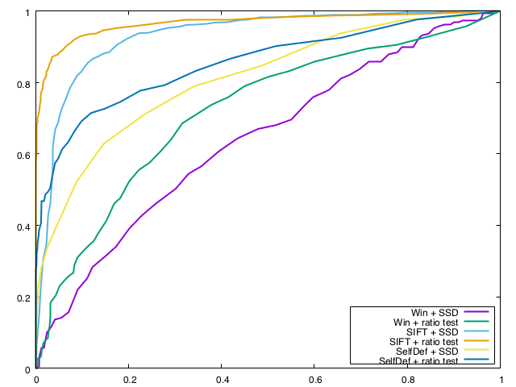
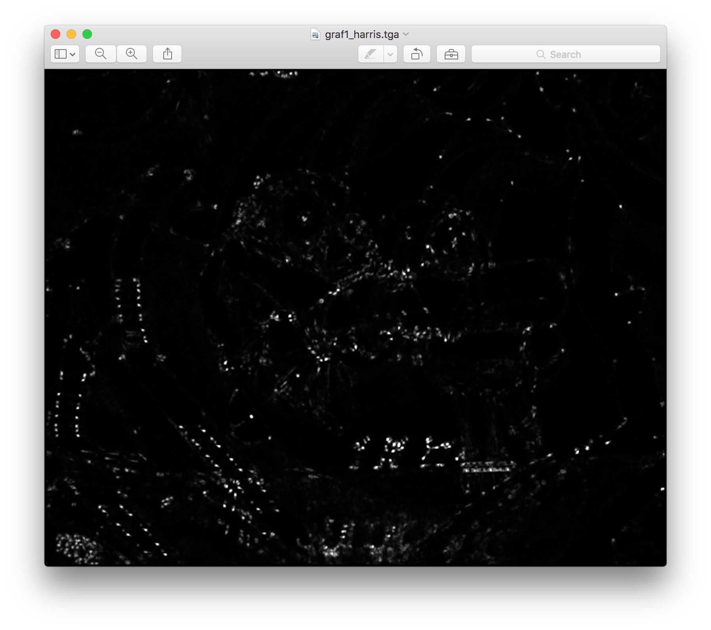
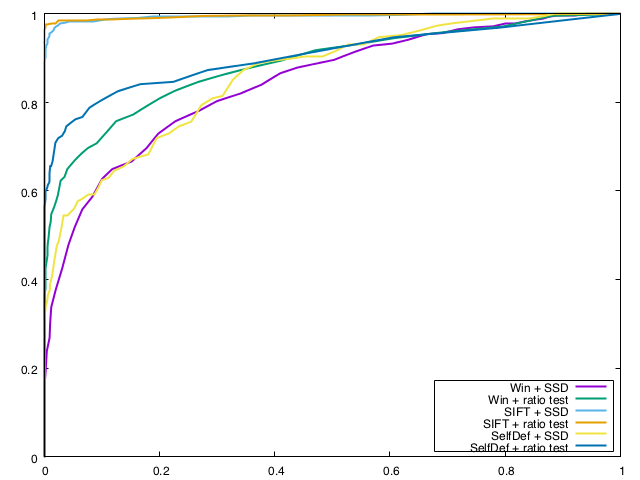
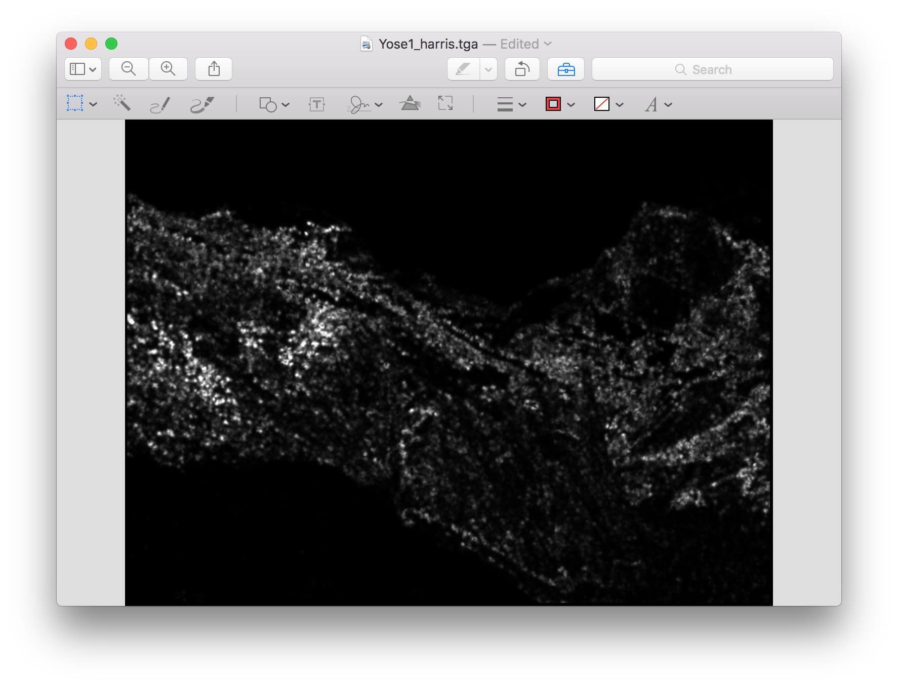

cse 559A project1 heyu 445576
1.Descriptor SelfDef
I implemented MOPS feature descriptor in a simple manner and add 2 addtional dimensions being normalized gradient.
Prework is to extract extreme points detected with Harris corner detector and then blur the gray image with Gaussian matrix.
For
every extreme point, plot a 40x40 window around it and rotates the
window to the center pixel's gradient angle. This window shold be
sampled to 8x8 to get low frequency content. Next, calculate the mean
and variance of pixels inside the window to normalized every pixel in
8x8 window and finally use pixel value of 8x8 window plus Ix/g and Iy/g
( where g=sqrt(Ix^2+Iy^2) ) at the point as a descriptor.
2.Choice Explain
Using normalized gradient can help in
contrast changing. I read MOPS's paper and find it uses normallized
pixel value so that I camp up with the idea that adding additional
information in MOPS descriptor would help improve its performance which
later was proved to be wrong. MOPS is a local error imparison
descriptor as it sampled to low frequencey window. It is also rotation
invariant and illumination invariant. In Fl library there is a
WarpGlobal
function that performs rigid, affine, or perspective transforms which
is useful for MOPS feature descriptors.
3.Performance Report
SelfDef descriptor on ROC files
1. graf

Corresponding Harris points are:

2. yosemite

Corresponding Harris points are:

Of all, SIFT performs overwhelmly good. Window descriptor gives
acceptable outcomes on Yosemite images (simple translation) as well as
SelfDef
descriptor but window descriptor is much worse on graf images(affine
transformation). This
is beacuse Window descriptor is based merely on neighbour image pixel
intensity which makes it weak on illuminating change and other
transformation of target objects while SelfDef descriptor is designed
to be scale, contrast, illumination, rotation invariante since it
composes normalized gradient value and uses rotated window.
SelfDef descriptor on Benchmark files
1.ssd
SelfDef descriptor
|
average error |
average AUC |
| bikes |
401.814648 |
0.652870 |
| graf |
329.560443 |
0.690947 |
| leuven |
367.752286 |
0.501519 |
| wall |
400.220956 |
0.502023 |
A sad fact is that my modified descriptor is worse than original,
especially in ssd matching tests. Showing below is the performance
of MOPS descriptor:
|
average error |
average AUC |
| bikes |
403.569898
|
0.730080 |
|
graf |
338.792933 pixels |
0.797137 |
|
leuven |
393.207580
|
0.607918 |
|
wall |
417.368032
|
0.687132 |
2.ratio test
SelfDef descriptor
|
average error (pixels) |
average AUC |
| bikes |
403.527703
|
0.801169 |
| graf |
330.561394
|
0.734998 |
| leuven |
367.752286 |
0.766872 |
| wall |
400.385326 |
0.660112 |
Same as in ssd tests, my descriptor is worse than MOPS. Given below is the performance of MOPS descriptor:
|
average error (pixels) |
average AUC |
| bikes |
404.018034 |
0.820655 |
| graf |
338.792933
|
0.738224 |
| leuven |
393.207580 |
0.783811 |
| wall |
417.128169 |
0.727042 |
5x5 Window descriptor on Benchmark files
1.ssd
|
average error (pixels) |
average AUC |
| bikes |
364.638141
|
0.374157 |
| graf |
321.807727
|
0.600330
|
| leuven |
383.248389
|
nan
|
| wall |
380.170806
|
0.420994 |
2.ratio test
|
average error (pixels) |
average AUC |
| bikes |
373.958487 |
0.583835 |
| graf |
325.007681 |
0.745771 |
| leuven |
370.922325
|
nan |
| wall |
380.170806
|
0.665255 |
(nan: represents the algorithm fails on at least one of the images in the set)
Benchmark files comforms with ROC files to show ratio test increases
matching correctness uniformlly and SelfDef descriptor is better at
blurring and illuminating problems, worse at transformatio tasks. The
only one of exception is 5x5 window descriptor with ratio test on graf
files which show surprisingly good results. It dosen't prove that 5x5
window descriptor is good at transformation.
4.Strength and weakness
MOPS descriptor performs comparatively good on blurring and
illuminating changing image sets, like bikes and leuven. But it deals
not very well with transform changing image sets, like graf and wall.
5.extra credit
1.Implement adaptive non-maximum suppression
By setting a small circle with radius r around Harris point, we search
for a changing r each time from 1 to some k that makes all detected
Harris point smaller than 2000. In this way we can avoid similar local
maximums in a adjacent small area so that interest point are spred more
evenly on the entire image.
with non-maximum suppression, MOPS on leuven performance is :
average error: 313.935243 pixels
average AUC: 0.829477
which is a little better than without non-maximum suppression:
average error: 393.207580
average AUC: 0.783811
but it takes really a long time, more than 10 minutes to finish while
after adding non-maximum suppression it takes just about 1 minute to
finish.